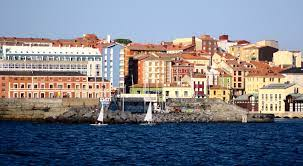
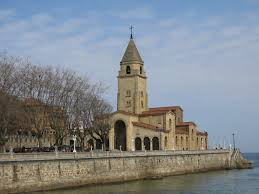
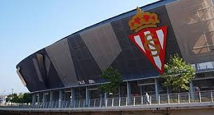

Gijon es una de las cidades mas bonitas de Asturias y la mas grnade en cueno poblacion contando con una cantidad de 268000 habitantes. No es de extrañar entonces que tenga una gran cantidad de turismo, lo que tambien hace que el sitio tenga granades hoteles, restaurantes y supermercados. Y este blog solo sera una pequeñisima desmostracion de todo lo que posee.
Para empezar, vamos a analizar la historia de Gijón, la ciudad mas grande de Asturias.
Los más antiguos testimonios de presencia del hombre en lo que hoy conocemos como concejo de Gijón datan del Mesolítico y consisten en instrumentos de piedra llamados «picos asturienses», hallados en la desembocadura del río Piles y en Tremañes. Estas herramientas permitían arrancar de las rocas moluscos como las lapas, los cuales formaban parte de la dieta de los primeros habitantes de la zona.
Más adelante, en el Neolítico, se construyeron en el Monte Deva una serie de túmulos (primitivos enterramientos) y en el Monte Areo un conjunto dolménico considerado como uno de los más importantes de la costa Cantábrica. En 1990, unas prospecciones arqueológicas permitieron sacar a la luz 30 dólmenes, repartidos en dos sectores diferentes: Los Llanos y Les Huelgues de San Pablo, que según algunos expertos están agrupados en un «cierto orden monumental». Sucesivas campañas arqueológicas han permitido el estudio de un túmulo en el área de San Pablo y otros dos en la zona de Los Llanos. De tipología diferenciada, dos de ellos presentan cámaras de planta rectangular y otro, trapezoidal con un pequeño corredor precediéndolo. Este último es un caso interesante, ya que no es frecuente encontrar dólmenes de corredor en el área del Cantábrico. Este conjunto dolménico está datado en el 5000 a. C. Estos monumentos megalíticos indicarían que en el actual concejo gijonés existía una importante población fija, que tenía como objetivo la demarcación del territorio que cada uno consideraba propio.
No se tienen noticias de asentamientos permanentes en el concejo hasta la aparición de los castros. El más conocido de estos poblados fortificados es el situado en la Campa Torres (Noega), con su origen en los siglos vi y v a. C., poblado por astures de la gens de los cilúrnigos y posteriormente romanizado al tratarse de un perfecto candidato para acoger temporalmente efectivos militares tras la conquista. En cambio, algunos autores opinan que debió existir algún tipo de población de carácter autóctono en el lugar que ocupa actualmente la ciudad, aunque no existen datos fidedignos que apoyen estas suposiciones. El castro de Noega fue progresivamente abandonado como consecuencia de la fundación en el siglo i d. C. de un nuevo asentamiento romano a los pies del Cerro de Santa Catalina, en el actual barrio de Cimadevilla. Este se convirtió en un importante puerto estratégico en la ruta marítima del Cantábrico y un centro regional o caput ciutatis que alcanzó su esplendor en el Bajo Imperio. Las investigaciones arqueológicas realizadas en el casco urbano a partir de la década de 1980 han descubierto y documentado los restos de termas (siglo i a ii d. C.), murallas (siglo iii a iv), viviendas, aljibes y una fábrica de salazones, entre otros hallazgos. Entre los vestigios de ocupación romana encontrados en el concejo destaca una gran villa del siglo iv en Veranes que conserva la parte residencial o pars urbana y la de servicios o pars rustica. Sin embargo, la existencia de una ciudad ha sido cuestionada por algunos historiadores, quienes interpretan que el poblamiento romano del cerro se corresponde con una villa con unos baños asociados y que potenció su actividad económica con una pesquería. La fortificación se correspondería con su transformación en un puesto defensivo militar.
Tras la romanización hay una época muy oscura que va desde el fin del control romano hasta la llegada de los musulmanes. De hecho, el paso a la época medieval está marcado por la pérdida progresiva de las funciones urbanas provocado por el colapso de la civilización romana. Las construcciones romanas son reaprovechadas para nuevas funciones. Así, se ha documentado el uso del complejo termal como lugar de habitación y de espacio funerario asociado a la iglesia de San Pedro, y en la zona rural del concejo la villa de Veranes fue reconvertida en iglesia y cementerio y la de Beloño en fortificación.
Gijón fue capital de los dominios transcantábricos musulmanes bajo mando del bereber Munuza, quien fijó aquí su residencia y puso destacamentos de tropas. También situó asentamientos militares en algún otro punto clave, pues un alto número de tropas habían cruzado el estrecho. El resto de la región, en cambio, gozó de mayor autonomía. La dominación duró aproximadamente desde el año 713 hasta el 718 o 722. En este último año se produjo la victoria de los dirigentes asturianos en la batalla de Covadonga, iniciada en el 718 y liderada por Pelayo, quien se convertirá en rey del reino de Asturias.
En el año 1147 un gran grupo de guerreros cruzados hicieron una parada en el puerto de Gijón. Habían salido de Dartmouth con el objetivo de conquistar Tierra Santa y fueron sorprendidos por un temporal en el mar Cantábrico. En un documento en el que cuentan estos hechos llaman a la ciudad Mala Rupis, que en latín significa «peña mala», tal vez por su aspecto poco accesible.
A principios del siglo xiii la crónica de Rodrigo Jiménez de Rada habla de Gijón como ciuitas deserta. Y a pesar de que en 1270 Alfonso X le concede fuero y Carta Puebla, se trata de un núcleo irrelevante tanto demográfica como económicamente.
El siglo xiv, época en la que el poder de la nobleza alcanza su máximo, estuvo marcado por una lucha dinástica tras la muerte de Alfonso XI. Se trata de una guerra entre Pedro I el Cruel, descendiente legítimo, y el bastardo Enrique de Trastámara. En los años siguientes Gijón fue centro de luchas entre el conde Alfonso Enríquez y Enrique III, en las que fue cercada, incendiada y arrasada durante un duro sitio en 1394, para terminar desapareciendo como centro urbano. Otras fuentes, sin embargo, opinan que se produjo un estancamiento y regresión en el crecimiento del núcleo urbano sin llegar nunca al abandono. Como consecuencia, durante este periodo la zona rural del concejo adquiere bastante importancia, localizándose la población diseminada por el campo al amparo de iglesias y monasterios construidos en estilo románico, y levantándose asimismo algunas fortalezas. Un ejemplo notable de estas últimas construcciones es el desaparecido castillo de Curiel, que servía para controlar el paso desde el centro de la región a la villa gijonesa. Aún hoy se conservan vestigios de esta época, destacando la torre de la familia Valdés —conocida popularmente como el Turruxón de Trubia, en la parroquia de Cenero— y las iglesias de San Miguel de Dueñas en Bernueces y la de San Juan Bautista de Cenero —las cuales se encuentran entre las supervivientes a la destrucción de numerosos templos parroquiales en la Guerra Civil—.
Será en los siglos xv y xvi cuando empiece a desarrollarse de nuevo, pero esto estará unido a su puerto y es cuando se construye una dársena que traerá un gran desarrollo en él tráfico de pesca y en el comercio de subsistencia.
En los siglos xvii y xviii es cuando Gijón empieza a tener un gran desarrollo que hará que el núcleo urbano se expanda. Esto fue debido al Reglamento de libre comercio (1778) que habilitó el puerto de Gijón para el comercio con las colonias americanas. Se convirtió de esta forma en el único puerto asturiano habilitado para tal fin, siendo además la vieja dársena mejorada y ampliada tras su destrucción por una tormenta. Gracias a esto y a la mejora de las comunicaciones con la Meseta y a la creación del Instituto Asturiano, durante el siglo xviii Gijón alcanza una población muy próxima a los 5500 habitantes. En esta época la figura de Gaspar Melchor de Jovellanos jugará un papel clave, pues además de promover la creación del Instituto y otras obras, será quien marque las líneas de expansión de la ciudad en su «Plan de Mejoras», pionero de los planes de ensanche.
A principios del siglo xix la localidad se dividía en los barrios de Cima de Villa y Bajo de Villa. En el nuevo espacio urbano podían distinguirse tres partes: el arrabal de La Rueda o barrio del Carmen —al pie de la dársena—, el Humedal —en el límite suroccidental, construido sobre unas marismas desecadas— y el ensanche jovellanista. Este conjunto quedó rodeado en 1836 por una cerca militar construida con motivo de la primera guerra carlista.2
En la segunda mitad del siglo Gijón experimenta un gran desarrollo debido fundamentalmente a la industrialización. De hecho, el crecimiento demográfico es tal que la villa pasa de 10 000 habitantes en 1857 a 27 000 habitantes en 1900. Un antecedente de este proceso fue la instalación en 1836 de la fábrica de cigarros en el antiguo convento de las Agustinas en Cimadevilla. El proceso de crecimiento se aceleró en los años siguientes por diversos factores, como la explotación del carbón en las Cuencas Mineras y la construcción de nuevas infraestructuras. Destacan la carretera a León y la Carretera Carbonera a Langreo. Esta última, construida e inaugurada en 1842 por el financiero Alejandro María Aguado, fue la primera carretera de peaje de España. Los elevados costes que esto generaba motivaron la búsqueda de otros medios de transporte para el carbón. En 1852 María Cristina de Borbón inauguró el Ferrocarril de Langreo, el primero en circular por Asturias. Todo esto hizo de Gijón una villa industrial en la cual la burguesía desempeñó un papel muy importante en el desarrollo urbano, creándose nuevas calles y plazas bien a través de reformas interiores en el casco histórico, bien a través de planes de ensanche para promover la expansión de la ciudad. El proyecto de ensanche sobre el arenal de San Lorenzo se aprobaría en 1867 y fue proyectado en terrenos en propiedad del primer marqués de Casa Valdés, al este de la villa. La trama ortogonal entonces creada, que comienza en la plaza de San Miguel, dio origen al actual barrio de La Arena.
También durante la segunda mitad del siglo xix se iniciaron las visitas vacacionales de la familia real, que se alojaba en el Palacio de Revillagigedo. Isabel II inauguró estas estancias el verano de 1858, cuando tomó baños de ola en la playa de Pando, la cual ocupaba el lugar de la actual playa de Poniente antes de dejar paso a infraestructuras portuarias. Más adelante se sucedieron varias estancias reales. Alfonso XII acudió a la misma playa en la temporada de baños de 1877, mientras que en la visita que realiza con su familia en 1884 ya comienza a tomar protagonismo el arenal de San Lorenzo, principal playa de la ciudad en la actualidad. Por último, su hijo Alfonso XIII visitará Gijón con su familia ya en agosto de 1900. Como consecuencia, la ciudad se convirtió entonces en un destino veraniego. Los cuatro cuatro balnearios que existieron en la playa de San Lorenzo entre 1883 y 1936, símbolos del ocio burgués de la época, son un reflejo de ello.
Entre finales del siglo xix y comienzos del xx la consolidación de una pujante burguesía propició un nuevo modelo de urbanismo. Los miembros de esta clase social impulsaron la construcción de edificios residenciales de mayor superficie y fachadas llamativas —algunos de ellos influenciados por el modernismo o art nouveau—, además de los equipamientos que exigían sus relaciones sociales y comerciales. Algunos ejemplos ya desaparecidos eran el antiguo teatro Jovellanos (en cuyo solar se alza la Biblioteca del mismo nombre), el teatro Circo Los Campos Elíseos o el Gran hotel Malet (donde se alojaba La Chata, tía de Alfonso XIII). Aún siguen en pie la plaza de toros de El Bibio y el teatro y café Dindurra, hoy teatro Jovellanos. Los arquitectos Miguel García de la Cruz y Manuel del Busto tendrían una gran relevancia en cuanto a número de obras en la ciudad.
Este nuevo desarrollo vino acompañado de más infraestructuras como la traída de aguas, el alumbrado a gas y luego eléctrico, etc. En 1874 se abre el tramo de ferrocarril entre Pola de Lena y Gijón, parte de la línea a León finalizada en 1884. En 1890 se inaugura el primer tranvía, que conectaba la calle Corrida con Somió. El crecimiento poblacional y económico provocó que, aunque fuera sucesivamente ampliado con varios diques y dársenas, el puerto se quedase pequeño al verse desbordado por la intensidad del tráfico. Como consecuencia, a las ya mencionadas infraestructuras se sumó en 1893 el inicio de la construcción de El Musel, que sería el primer puerto carbonero de la península y estuvo en obras hasta 1907.
El urbanismo burgués contrastaba notablemente con las viviendas y condiciones de vida precarias de los más desfavorecidos dentro de la clase obrera. Un gran número de estas personas vivía en las conocidas como «ciudadelas», grupos de pequeñas casas unifamiliares de muy baja calidad distribuidas en hileras opuestas y con servicios comunes a todas ellas. Estas se construían sin licencia municipal en el patio interior de las manzanas y se ocultaban tras otros edificios o al fondo de un callejón. De entre todas ellas destaca la de la calle Capua, actualmente convertida en museo. Con el cambio de siglo también aparecieron las primeras parcelaciones por iniciativa particular. Consistían en un trazado de calles sobre fincas rústicas comunicadas con el casco urbano mediante una vía de acceso. Estas formaban una corona alrededor de la ciudad histórica, el ensanche y las zonas industriales de El Natahoyo y La Calzada. El suelo del ensanche de San Lorenzo, demasiado caro para la demanda menos solvente, tardaría en ocuparse. Entre todas las parcelaciones destacó la primera de ellas en el Coto de San Nicolás, situada al sur del ensanche.
En la revolución de 1934, la CNT convocó una apresurada huelga general el 4 de octubre y esperó con ansias la traída de armas y dinamita desde las Cuencas Mineras, epicentro de la revolución. Sin embargo, el armamento nunca llegó, posibilitando que la Guardia Civil y la Guardia de Asalto tomaran posiciones en la ciudad. Los revolucionarios montaron barricadas, especialmente en El Llano, y con poco material intentaron tomar la casa consistorial el 8 de octubre, provocando que el crucero Libertad bombardeara Cimadevilla. La revolución fue aplastada y sus líderes ejecutados, detenidos o exiliados. Esta desincronización y falta de preparación por parte de la CNT no volvería a ocurrir en el golpe de Estado de julio de 1936.
En febrero de 1936 Avelino González Mallada, de la CNT, arrasó en las elecciones municipales. Con el estallido de la Guerra Civil el 18 de julio de 1936, la ciudad quedó controlada por el bando republicano debido a la anticipación del gobierno municipal. Se formó el Comité de Guerra de Gijón, de preponderancia anarquista. Por su parte, el ejército, concentrado en los cuarteles de Simancas y El Coto, se unió al alzamiento tras una entrevista del coronel Aranda —posterior defensor del sitio de Oviedo— y el general Pinilla —comandante de las divisiones en Gijón—. La sublevación en sí comenzó el 20 de julio, siendo los sublevados sorprendidos por la organización de milicianos y locales, que concentraron sus esfuerzos contra el cuartel de Simancas mediante un duro asedio. El buque sublevado Almirante Cervera intentaría apoyar a los militares bombardeando la ciudad entre el 29 de julio y el 9 de agosto, provocando la destrucción de edificios y pánico entre la población. La respuesta miliciana contra el golpe de Estado incluyó la destrucción de templos en la ciudad y en especial en su zona rural, así como persecución y ejecuciones a civiles. Las tropas del general Pinilla sucumbieron a mediados de agosto, concluyendo el asedio. Posteriormente la villa fue la capital del Consejo Interprovincial de Asturias y León, que se acabaría declarando soberano y se convertiría en el Consejo Soberano de Asturias y León. Las tropas nacionales continuaron hostigando la ciudad; no habría batalla directa aunque sí continuos bombardeos, como los de la Legión Cóndor contra el puerto de El Musel y la ciudad en agosto de 1937. Gijón se fortificó con refugios antiaéreos (la mayoría improvisados en sótanos aunque destaca el excavado en Cimadevilla) e incluso construyó un aeródromo en Las Mestas. Finalmente, la ocupación de la ciudad por las tropas franquistas tuvo lugar el de octubre de 1937.
En la década de 1940 comenzó la construcción de la Universidad Laboral y se redactó el Plan Gamazo, cuya aprobación en 1947 intentó asentar las bases del crecimiento urbano en décadas posteriores.
Durante la posguerra hubo en Gijón una grave situación de déficit de vivienda. Hacia la mitad del siglo comenzaron a tener efecto diferentes propagandas dirigidas a incrementar la construcción por iniciativa tanto pública como privada. Así, además de solucionar el problema de falta de vivienda, se intentaba fijar trabajadores donde era necesaria fuerza de trabajo y difundir una ideología que celebraba las virtudes de la propiedad privada y la paz social. Sin embargo, esto fue dando lugar a numerosos grupos de viviendas construidos fuera del perímetro urbano o en suelo previsto como industrial, alterando gravemente la planificación urbanística de la ciudad y marcando su desarrollo en las décadas siguientes. En 1958 surge el polígono de Las Mil Quinientas, germen del barrio de Pumarín. Los barrios de El Llano y La Calzada fueron los de mayor crecimiento, siendo muy importante la llegada de inmigrantes desde Extremadura, Andalucía y Castilla entre otras regiones. Como resultado, en la década de 1950 y sobre todo en la de 1960 la ciudad experimentó su mayor desarrollo, superando por primera vez en población a Oviedo.
Es también en esta época cuando surge la Feria Internacional de Muestras de Asturias en 1963, que se convertirá en el escaparate de la técnica, la industria, la ingeniería, el turismo y el comercio de la región. Desde 1966 se celebra en el Recinto Ferial Luis Adaro.
En 1971 surge UNINSA como resultado de la fusión de las fábricas de Moreda-Gijón, Mieres y Duro-Felguera. La concentración de la actividad siderúrgica en Gijón y Avilés hace que la ciudad comience a recibir población de las Cuencas Mineras, que antes albergaban este tipo se industrias. El efecto multiplicador que UNINSA fomentó en otros sectores tuvo igualmente como consecuencia un rápido desarrollo. El gran incremento de la población ―de 121 000 en 1961 a 237 200 en 1975― creó una gran presión especulativa sobre la construcción. Esto trajo consigo la construcción de edificios cada vez de mayores alturas —especialmente en la zona cercana a la playa de San Lorenzo y en los terrenos de la fábrica de vidrios de Begoña— y la falta de equipamientos y servicios urbanos en zonas periféricas de la ciudad —El Natahoyo, La Calzada, Pumarín y Contrueces—.
Las últimas décadas del siglo xx trajeron consigo una crisis industrial que afectó sobre todo a la siderurgia y al sector naval al igual que al resto de la industria asturiana, especialmente la minera. A partir de la crisis de 1973, y en especial con los objetivos del Gobierno de España para entrar en la CEE entre 1982 y 1986, la reconversión industrial ocurrió en toda la región. En Gijón únicamente en 1982 se cerraron 71 empresas. ENSIDESA, empresa que había absorbido a UNINSA, efectuó recortes de plantillla. Más adelante, junto a Altos Hornos de Vizcaya, se convirtió en Aceralia y a finales del siglo xx se integró en el grupo europeo Arcelor junto a la luxemburguesa Arbed y la francesa Usinor, absorbidas en la actualidad por Mittal Steel. La industria naval se unificó en Naval Gijón en 1985 y la industria textil prácticamente desapareció en 1990. En 1987 se alcanzó el récord histórico de desempleo, que afectaba a un 26% de la ciudad.
En 1986 se activa un Plan General de Ordenación Urbana que sanearía varias hectáreas del barrio de El Llano.67 Sería el primero de varios planes urbanísticos que dignificarían zonas marginales como La Calzada y Tremañes o reformularían barrios industriales como El Natahoyo. Con la ayuda de estos cambios y de la recuperación de la economía gijonesa a la par que la española a mediados de los 1990, Gijón se reconvirtió en una ciudad orientada al sector servicios. En el año 1990 se inician las transformaciones que acompañaron a esta nueva etapa con la conversión en parque público de las instalaciones militares del Cerro de Santa Catalina, en Cimadevilla. Se inaugura allí la escultura Elogio del Horizonte, de Chillida. En esta década se emprendió además un ambicioso proyecto de edificaciones públicas a partir del derribo de buena parte del Gijón industrial. La desaparición de industrias portuarias dejaría espacio para nuevas playas (Poniente, El Arbeyal) así como al Puerto Deportivo. El cierre de la Fábrica de Moreda originaría un barrio entero, el de Moreda, dignificado por el desvío de las vías de ferrocarril desde la estación del Norte (Museo del Ferrocarril desde 1995) hasta la estación de Gijón-Jovellanos (1990).
VolverDespues de la muy entretenida seccion anterior es hora de pasar a la siguiente seccion, La Geografia de Gijón.
Gijón está situado en el centro de la costa cantábrica del Principado de Asturias, España, en el suroeste de Europa, al norte de la península ibérica, sobre una rasa litoral en las estribaciones de la cordillera Cantábrica. Forma parte de la vertiente hidrográfica cantábrica y se sitúa en su punto más alto (Pico Cima) a 737 m s. n. m.. El punto más alto de la zona urbana (Ceares) se sitúa a 59 m s. n. m.. El término municipal de Gijón tiene una superficie de 182,1 km²y una forma vagamente rectangular. La ciudad, que ocupa una superficie aproximada de 13,9 km², está situada en el tramo costero central del concejo, en una bahía dividida por el Cerro de Santa Catalina (Cimadevilla) que separa la playa de San Lorenzo al este, del Puerto Deportivo, playas de Poniente y Arbeyal, astilleros y puerto de El Musel, al oeste.
El término municipal de Gijón limita con los siguientes concejos: Carreño al noroeste, Corvera al oeste, Llanera al suroeste, Siero al sur y Villaviciosa al este. Con Sariego sus límites llegan a unirse en un pequeño punto correspondiente a la Peña de los Cuatro Jueces, así llamada por constituir la confluencia de los concejos de Gijón, Villaviciosa, Sariego y Siero.
Gijón forma parte de la vertiente hidrográfica cantábrica. Los ríos más destacables del concejo son el río Aboño y el río Piles. El río Aboño es el de mayor tamaño y caudal. Nace en el Alto de la Miranda (Llanera) y desemboca en el límite entre el concejo de Gijón y el de Carreño formando así la ría de Aboño, fuertemente industrializada en las últimas décadas. Este río se encuentra embalsado a la altura de San Andrés de los Tacones, al oeste del concejo al lado de la autopista A-66, y sirve de abastecimiento de la empresa ArcelorMittal. El principal afluente del Aboño es el río Pinzales, de similar importancia hidrológica. El Pinzales nace en el concejo de Siero y atraviesa el concejo de Gijón de sur a norte. El río Piles, de gran importancia por atravesar parte del casco urbano de la ciudad, es un río corto y de caudal escaso cuyos 10 o 15 kilómetros transcurren íntegramente dentro de los límites del municipio, atravesando la parte este de la ciudad hasta desembocar en la playa de San Lorenzo. Existen otros arroyos menores (Peña Francia, Santurio, San Miguel, Tremañes, Cutis, Pilón, etc), de los cuales el más importante es el de La Ñora, que forma un tramo de la frontera con el concejo de Villaviciosa y desemboca en la playa del mismo nombre.
El clima de Gijón, determinado por la presencia del mar y la baja altitud del concejo, es un clima oceánico, con abundantes precipitaciones desde el otoño hasta los primeros días de la primavera, y un tiempo más estable y cálido en verano. Según los datos ofrecidos por la Agencia Estatal de Meteorología para la estación meteorológica de Gijón (período 1971-2000), la media del mes más frío (enero) fue de 8,9 °C, la media del mes más cálido (agosto) fue de 19,7 °C y la temperatura media anual es de 13,8 °C (media anual de máximas: 17,6 °C; media anual de mínimas: 9 °C). La nieve cubre ocasionalmente en el invierno los montes del concejo que rodean la ciudad y llega de forma esporádica al centro de la ciudad, con una media de un día de nieve anual.
La precipitación media anual es de 920 l/m². Ello se debe al denominado efecto de ladera, según el cual las lluvias más intensas se localizan en las zonas más altas y las mínimas en zonas costeras del centro y el occidente. Coincidiendo con la época de menos lluvias se dan situaciones de aridez y sequía (el 11 % de los meses hay aridez y el 9 % el déficit hídrico es grave).
Los vientos son esporádicos y estacionales. En invierno soplan preferentemente del sureste, templados y cálidos, a causa de la retirada hacia el sur del anticiclón de las Azores, con lo que las borrascas atlánticas siguen una trayectoria más meridional. En verano la situación se invierte, predominando vientos del nordeste, fríos y secos.
| Mes | Ene. | Feb. | Mar. | Abr. | May. | Jun. | Jul. | Ago. | Sep. | Oct. | Nov. | Dic. | Anual |
|---|---|---|---|---|---|---|---|---|---|---|---|---|---|
| Temp. máx. abs. (°C) | 23.6 | 23 | 27 | 28 | 31.8 | 36.4 | 31.4 | 30 | 34.6 | 30.4 | 26.1 | 25 | 36.4 |
| Temp. máx. media (°C) | 13.1 | 13.8 | 14.9 | 15.6 | 17.8 | 20.2 | 22.4 | 23.2 | 21.8 | 19.0 | 15.6 | 14.0 | 17.6 |
| Temp. media (°C) | 8.9 | 9.6 | 10.7 | 11.8 | 14.3 | 16.9 | 19.2 | 19.7 | 17.9 | 15.0 | 11.6 | 9.9 | 13.8 |
| Temp. mín. media (°C) | 4.7 | 5.4 | 6.6 | 8.1 | 10.9 | 13.6 | 16.0 | 16.2 | 14.1 | 11.0 | 7.6 | 5.8 | 10.0 |
| Temp. mín. abs. (°C) | -9.6 | -6.0 | -3.0 | -1.4 | 2.2 | 5.8 | 5.6 | 5.2 | 4.7 | 2.6 | -3.4 | -6.8 | -9.6 |
| Precipitación total (mm) | 94 | 85 | 74 | 93 | 79 | 47 | 45 | 54 | 70 | 104 | 120 | 104 | 971 |
| Días de precipitaciones (≥ 1 mm) | 12 | 11 | 10 | 12 | 11 | 7 | 6 | 7 | 8 | 11 | 12 | 12 | 121 |
| Horas de sol | 103 | 109 | 137 | 151 | 167 | 180 | 194 | 190 | 158 | 132 | 106 | 92 | 1721 |
| Mes | Ene. | Feb. | Mar. | Abr. | May. | Jun. | Jul. | Ago. | Sep. | Oct. | Nov. | Dic. | Anual |
| Temp. máx. media (°C) | 14.2 | 14.2 | 15.1 | 16.5 | 18.2 | 20.7 | 23.1 | 23.6 | 22.3 | 20.1 | 16.7 | 15.9 | 18.4 |
| Temp. media (°C) | 11.0 | 10.8 | 11.9 | 13.5 | 15.4 | 18.0 | 20.5 | 20.7 | 19.4 | 17.0 | 13.5 | 11.9 | 15.3 |
| Temp. mín. media (°C) | 7.8 | 7.4 | 8.6 | 10.5 | 12.6 | 15.3 | 17.9 | 17.7 | 16.5 | 13.8 | 10.3 | 7.8 | 12.2 |
| Precipitación total (mm) | 136 | 121 | 103 | 66 | 62 | 55 | 37 | 41 | 65 | 88 | 169 | 87 | 1032 |
| Horas de sol | 100 | 105 | 153 | 177 | 183 | 153 | 171 | 197 | 188 | 155 | 112 | 120 | 1814 |